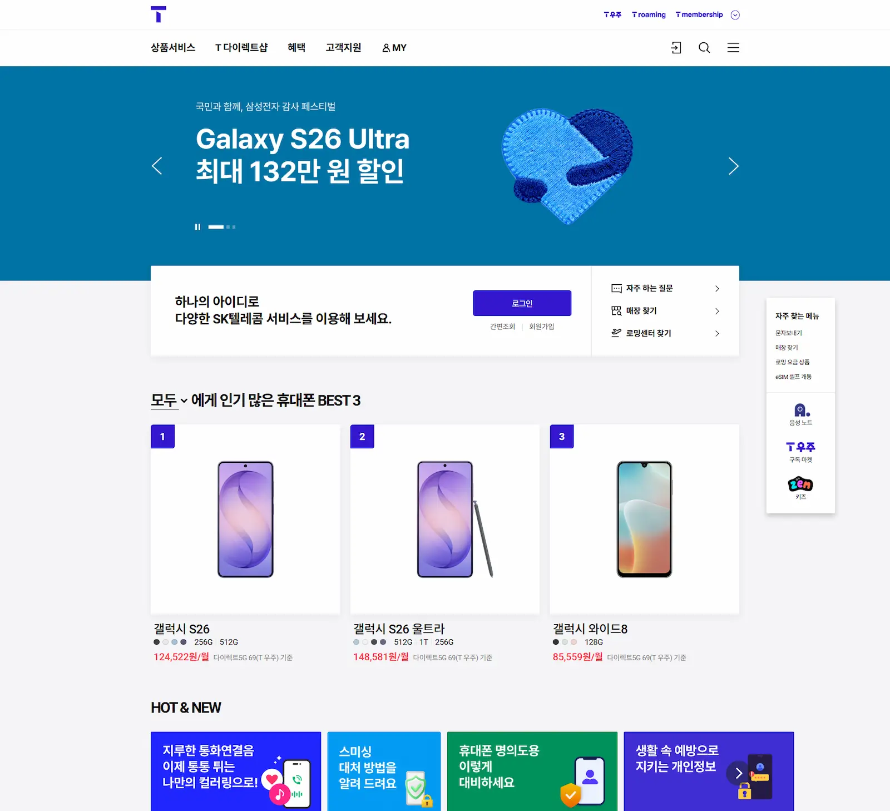

01
ABOUT
단순 마크업을 넘어, 운영 환경에서 UI 품질을 유지합니다.
실제 유저가 마주하는 라이브 운영 환경에서 UI 품질을 지속해서 관리하는 것을 가장 중요하게 생각합니다. 브라우저 파편화와 다양한 해상도 변화 속에서도 흔들리지 않는 견고한 마크업 구조를 설계합니다.
대기업 통신사 단일 프로젝트에서 2년 10개월간 장기 운영 및 유지보수를 전담하였습니다. 긴급 이슈 대응과 서비스 개편 작업을 거치며, 웹 접근성(WCAG) 인증을 다섯 차례 갱신하고 React 기반 화면 수정까지 직접 담당했습니다.
02
WORK

VISIT SITE (새 창으로 열림)SK텔레콤 T world 공식 홈페이지 운영 퍼블리싱을 담당하며 신규 페이지 마크업, 콘텐츠 업데이트, 운영 중 발생한 UI 오류 대응 등 전반적인 UI 품질 관리를 수행했습니다.
- 웹 접근성 가이드(WCAG) 기준을 유지하며 서비스 개선 및 접근성 마크업 적용
- Figma 시안 검토부터 크로스브라우징 검수까지 운영 배포 전 과정 전담
- Git을 활용한 저장소 및 브랜치 관리로 운영 프로세스 기반의 버전 관리 수행
03
PORTFOLIO
CASE 01 / ACCESSIBILITY
웹 접근성(WA) 품질 개선 및 인증 갱신
실제 운영 환경에서 발견된 접근성 이슈를 분석하고, HTML 구조와 ARIA 속성을 개선한 과정을 Before / After 형태로 정리한 사례 아카이브입니다. 스크린리더 호환성, 키보드 탐색, 색상 대비 등 WCAG 2.1 AA 기준에 따라 점검하고 개선했습니다.
CASE 02 / SERVICE MAINTENANCE
운영 프로젝트 작업 사례
SK텔레콤 T world 서비스 운영에서 실제 담당했던 퍼블리싱 작업 사례를 정리했습니다. 인증 UI 개선, 서비스 개편, 긴급 이슈 대응까지 실무 환경에서의 협업 프로세스와 함께 기록합니다.